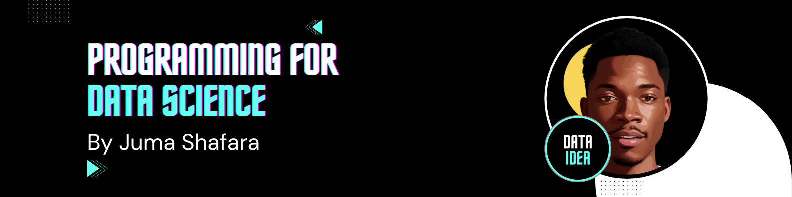

# These are the libraries will be used for this lab.
import torchLinear Regression 1D, Prediction
In this lab, we will review how to make a prediction in several different ways by using PyTorch.

Objective
- How to make the prediction for multiple inputs.
- How to use linear class to build more complex models.
- How to build a custom module.
Table of Contents
In this lab, we will review how to make a prediction in several different ways by using PyTorch.
Estimated Time Needed: 15 min
Preparation
The following are the libraries we are going to use for this lab.
Prediction
Let us create the following expressions:
\(b=-1,w=2\)
\(\hat{y}=-1+2x\)
First, define the parameters:
# Define w = 2 and b = -1 for y = wx + b
w = torch.tensor(2.0, requires_grad = True)
b = torch.tensor(-1.0, requires_grad = True)Then, define the function forward(x, w, b) makes the prediction:
# Function forward(x) for prediction
def forward(x):
yhat = w * x + b
return yhatLet’s make the following prediction at x = 1
\(\hat{y}=-1+2x\)
\(\hat{y}=-1+2(1)\)
m = torch.tensor([2])
print(m)
forward(m)tensor([2])tensor([3.], grad_fn=<AddBackward0>)# Predict y = 2x - 1 at x = 1
x = torch.tensor([[1.0]])
yhat = forward(x)
print("The prediction: ", yhat)The prediction: tensor([[1.]], grad_fn=<AddBackward0>)Now, let us try to make the prediction for multiple inputs:

Let us construct the x tensor first. Check the shape of x.
# Create x Tensor and check the shape of x tensor
x = torch.tensor([[1.0], [2.0]])
print("The shape of x: ", x.shape)The shape of x: torch.Size([2, 1])Now make the prediction:
# Make the prediction of y = 2x - 1 at x = [1, 2]
yhat = forward(x)
print("The prediction: ", yhat)The prediction: tensor([[1.],
[3.]], grad_fn=<AddBackward0>)The result is the same as what it is in the image above.
Practice
Make a prediction of the following x tensor using the w and b from above.
# Practice: Make a prediction of y = 2x - 1 at x = [[1.0], [2.0], [3.0]]
x = torch.tensor([[1.0], [2.0], [3.0]])
yhat = forward(x)
print("The prediction: ", yhat)The prediction: tensor([[1.],
[3.],
[5.]], grad_fn=<AddBackward0>)Double-click here for the solution.
Class Linear
The linear class can be used to make a prediction. We can also use the linear class to build more complex models. Let’s import the module:
# Import Class Linear
from torch.nn import LinearSet the random seed because the parameters are randomly initialized:
# Set random seed
torch.manual_seed(1)<torch._C.Generator at 0x7c780c384eb0>Let us create the linear object by using the constructor. The parameters are randomly created. Let us print out to see what w and b. The parameters of an torch.nn.Module model are contained in the model’s parameters accessed with lr.parameters():
# Create Linear Regression Model, and print out the parameters
lr = Linear(in_features=1, out_features=1, bias=True)
print("Parameters w and b: ", list(lr.parameters()))Parameters w and b: [Parameter containing:
tensor([[0.2772]], requires_grad=True), Parameter containing:
tensor([-0.3058], requires_grad=True)]This is equivalent to the following expression:
\(b=-0.44, w=0.5153\)
\(\hat{y}=-0.44+0.5153x\)
A method state_dict() Returns a Python dictionary object corresponding to the layers of each parameter tensor.
print("Python dictionary: ",lr.state_dict())
print("keys: ",lr.state_dict().keys())
print("values: ",lr.state_dict().values())Python dictionary: OrderedDict({'weight': tensor([[0.3652]]), 'bias': tensor([-0.3897])})
keys: odict_keys(['weight', 'bias'])
values: odict_values([tensor([[0.3652]]), tensor([-0.3897])])The keys correspond to the name of the attributes and the values correspond to the parameter value.
print("weight:",lr.weight)
print("bias:",lr.bias)weight: Parameter containing:
tensor([[0.3652]], requires_grad=True)
bias: Parameter containing:
tensor([-0.3897], requires_grad=True)Now let us make a single prediction at x = [[1.0]].
# Make the prediction at x = [[1.0]]
x = torch.tensor([[1.0]])
yhat = lr(x)
print("The prediction: ", yhat)The prediction: tensor([[-0.0245]], grad_fn=<AddmmBackward0>)Similarly, you can make multiple predictions:

Use model lr(x) to predict the result.
# Create the prediction using linear model
x = torch.tensor([[1.0], [2.0]])
yhat = lr(x)
print("The prediction: ", yhat)The prediction: tensor([[-0.0286],
[ 0.2487]], grad_fn=<AddmmBackward0>)Practice
Make a prediction of the following x tensor using the linear regression model lr.
# Practice: Use the linear regression model object lr to make the prediction.
x = torch.tensor([[1.0],[2.0],[3.0]])
yhat = lr(x)
print("The prediction: ", yhat)The prediction: tensor([[-0.0286],
[ 0.2487],
[ 0.5259]], grad_fn=<AddmmBackward0>)Double-click here for the solution.
Build Custom Modules
Now, let’s build a custom module. We can make more complex models by using this method later on.
First, import the following library.
# Library for this section
from torch import nnNow, let us define the class:
# Customize Linear Regression Class
class LR(nn.Module):
# Constructor
def __init__(self, input_size, output_size):
# Inherit from parent
super(LR, self).__init__()
self.linear = nn.Linear(input_size, output_size)
# Prediction function
def forward(self, x):
out = self.linear(x)
return outCreate an object by using the constructor. Print out the parameters we get and the model.
# Create the linear regression model. Print out the parameters.
lr = LR(1, 1)
print("The parameters: ", list(lr.parameters()))
print("Linear model: ", lr.linear)The parameters: [Parameter containing:
tensor([[-0.0729]], requires_grad=True), Parameter containing:
tensor([-0.0900], requires_grad=True)]
Linear model: Linear(in_features=1, out_features=1, bias=True)Let us try to make a prediction of a single input sample.
# Try our customize linear regression model with single input
x = torch.tensor([[1.0]])
yhat = lr(x)
print("The prediction: ", yhat)The prediction: tensor([[-0.1629]], grad_fn=<AddmmBackward0>)Now, let us try another example with multiple samples.
# Try our customize linear regression model with multiple input
x = torch.tensor([[1.0], [2.0]])
yhat = lr(x)
print("The prediction: ", yhat)The prediction: tensor([[-0.1629],
[-0.2358]], grad_fn=<AddmmBackward0>)the parameters are also stored in an ordered dictionary :
print("Python dictionary: ", lr.state_dict())
print("keys: ",lr.state_dict().keys())
print("values: ",lr.state_dict().values())Python dictionary: OrderedDict([('weight', tensor([[0.5153]])), ('bias', tensor([-0.4414]))])
keys: odict_keys(['weight', 'bias'])
values: odict_values([tensor([[0.5153]]), tensor([-0.4414])])Practice
Create an object lr1 from the class we created before and make a prediction by using the following tensor:
# Practice: Use the LR class to create a model and make a prediction of the following tensor.
x = torch.tensor([[1.0], [2.0], [3.0]])
lr1 = LR(1, 1)
yhat = lr(x)
yhat
# print("The prediction: ", yhat)tensor([[-0.1629],
[-0.2358],
[-0.3088]], grad_fn=<AddmmBackward0>)